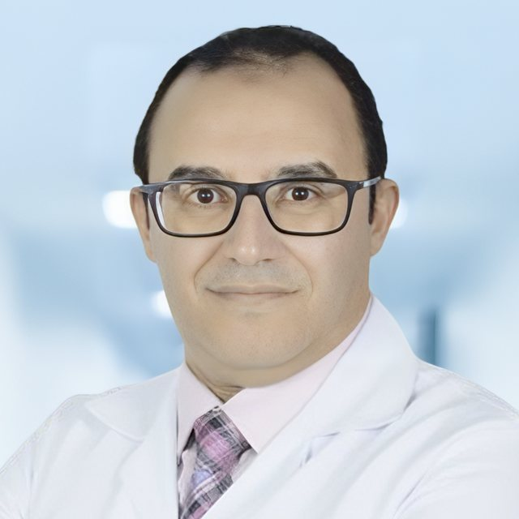

الكبد الدهني شائع وصامت، ويمكن علاجه إذا اكتُشف مبكرًا.
تثقيف واضح وموثوق عن الكبد الدهني (MASLD) والتهاب الكبد الدهني (MASH) بالعربية والإنجليزية، للمرضى وأسرهم وللأطباء الذين يرعونهم.
أنا مريض
أدلة مبسطة، ورحلتك مع الكبد، وفحص سريع لعوامل الخطر.
أنا طبيب
مرجع للأطباء، وحاسبة FIB-4، وتعلّم حسب تخصصك.
مع مرور السنين قد يسبّب الكبد الدهني تندّبًا في الكبد. يصنّف الأطباء هذا التندّب (التليّف) إلى خمس مراحل:
F0لا يوجد تليّف
F1خفيف
F2متوسط
F3متقدّم
F4تشمّع
أفضل وقت لاكتشافه والتدخّل
الفعاليات القادمة
كل الأخبار والفعالياتآخر الأخبار
عرض الكلمحاضرات توعوية بالعربية
كل الفيديوهات
تعرّف على المؤسس
د. محمود الدسوقي، استشاري الباطنة والجهاز الهضمي وأستاذ مساعد. أسّس الأكاديمية ليقدّم للمرضى والأطباء في العالم العربي تثقيفًا واضحًا عن الكبد الدهني بلغتهم.
اقرأ الملف الكامل